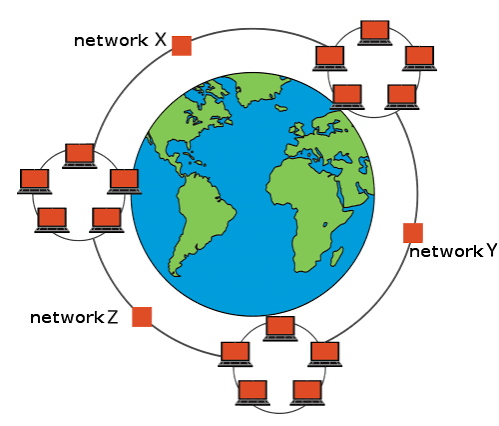
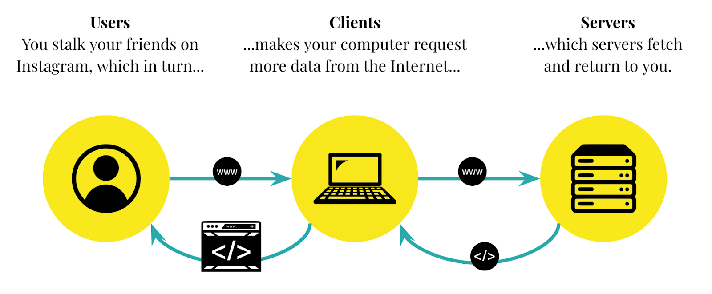

Introduction
The Internet is a worldwide network that connects computers and other devices. It allows people to share information, communicate with each other and access different services. Today, the Internet is used in almost every field, including education, business, entertainment and communication.
We use the Internet for many things such as watching videos, reading news, attending online classes and sending messages. It has made sharing information much faster and easier.

You can learn more about the Internet on Wikipedia.
How Does the Internet Work?
The Internet works by connecting different devices through networks. When we open a website, our browser sends a request to a server. The server processes the request and sends the required information back to our browser.
Basic Steps
- We open a web browser on our device.
- We enter the address of a website.
- The browser sends a request to the server.
- The server sends the website data back.
- The browser displays the website on our screen.
These steps usually happen very quickly. Different technologies and protocols work together to make this possible.

Another useful website is MDN Web Docs , where beginners can learn how the Internet works.
Advantages of the Internet
The Internet has many advantages in our daily life.
- It helps us communicate with people around the world.
- It provides access to educational resources.
- It makes finding information easier.
- It provides entertainment through games, videos and music.
- It helps businesses connect with customers.
Internet Usage
Different people use the Internet for different purposes. The following table shows some common uses.
| Activity | Purpose | Example |
|---|---|---|
| Education | Learning new things | Online courses |
| Communication | Talking to people | Email and messaging |
| Entertainment | Passing free time | Watching videos |
| Business | Buying and selling products | Online shopping |
Using the Internet Safely
Although the Internet is useful, we should also be careful while using it. We should avoid sharing personal information with unknown people and use strong passwords for our accounts.
We should also check whether the information we read online is reliable. Not everything available on the Internet is true.
Conclusion
The Internet has become an important part of modern life. It helps us learn, communicate, work and access information. Understanding how it works can help us use it more effectively. We should make good use of the Internet and always remember to stay safe online.